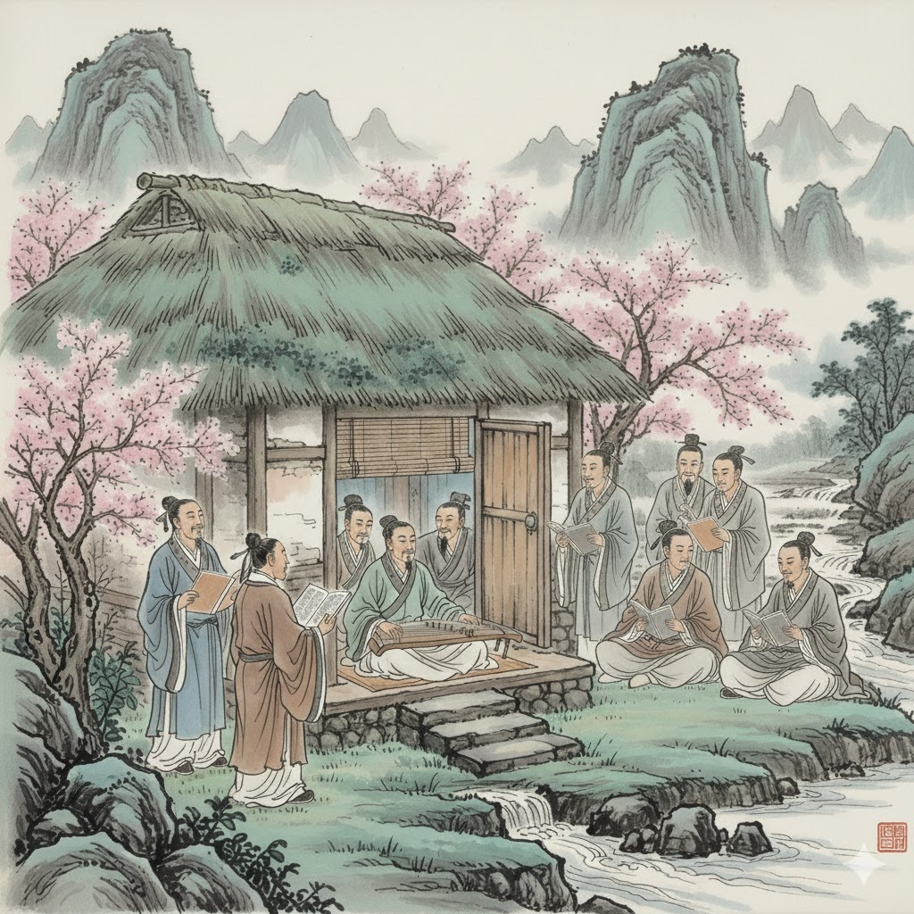

 《 陋 柳沽七 ㄌㆦ˫ 室 時經四 ㄒㄧㆻ 銘 門經五 ㆠㄧㄥˊ 》 山 時干一 ㄙㄢ 不 邊君四 ㄅㄨㆵ 在 曾皆七 ㄗㄞ˫ 高 求高一 ㄍㄜ ， 有 英丩二 ㄧㄨˋ 仙 時堅一 ㄒㄧㄢ 則 曾經四 ㄐㄧㆻ 名 門經五 ㆠㄧㄥˊ 。 水 時規二 ㄙㄨㄧˋ 不 邊君四 ㄅㄨㆵ 在 曾皆七 ㄗㄞ˫ 深 出金一 ㄑㄧㆬ ， 有 英丩二 ㄧㄨˋ 龍 柳恭五 ㄌㄧㆲˊ 則 曾經四 ㄐㄧㆻ 靈 柳經五 ㄌㄧㄥˊ 。 斯 時艍一 ㄙㄨ 是 時居七 ㄒㄧ˫ 陋 柳沽七 ㄌㆦ˫ 室 時經四 ㄒㄧㆻ ， 惟 英規五 ㄨㄧˊ 吾 雅沽五 ㄫㆦˊ 德 地經四 ㄉㄧㆻ 馨 喜經一 ㄏㄧㄥ 。 苔 他皆一 ㄊㄞ 痕 喜君五 ㄏㄨㄣˊ 上 時恭七 ㄒㄧㆲ˫ 階 求皆一 ㄍㄞ 綠 柳恭八 ㄌㄧㆦㆻ˙ ， 草 出高二 ㄘㄜˋ 色 時經四 ㄒㄧㆻ 入 入金八 ㆢㄧㆴ˙ 簾 柳兼五 ㄌㄧㆰˊ 青 出經一 ㄑㄧㄥ 。 談 地甘五 ㄉㆰˊ 笑 出茄三 ㄑㄧㄜ˪ 有 英丩二 ㄧㄨˋ 鴻 喜公五 ㄏㆲˊ 儒 入艍五 ㆡㄨˊ ， 往 英公二 ㆲˋ 來 柳皆七 ㄌㄞ˫ 無 門艍五 ㆠㄨˊ 白 邊經八 ㄅㄧㆻ˙ 丁 地經一 ㄉㄧㄥ 。 可 去高二 ㄎㄜˋ 以 英居二 ㄧˋ 調 地嬌五 ㄉㄧㄠˊ 素 時沽三 ㄙㆦ˪ 琴 去金五 ㄎㄧㆬˊ ， 閱 英觀八 ㄨㄚㆵ˙ 金 求金一 ㄍㄧㆬ 經 求經一 ㄍㄧㄥ 。 無 門艍五 ㆠㄨˊ 絲 時居一 ㄒㄧ 竹 地恭四 ㄉㄧㆦㆻ 之 曾居一 ㄐㄧ 亂 柳觀七 ㄌㄨㄢ˫ 耳 耐居二 ㄋㄧˋ ， 無 門艍五 ㆠㄨˊ 案 英干三 ㄢ˪ 牘 地公八 ㄉㆦㆻ˙ 之 曾居一 ㄐㄧ 勞 柳高五 ㄌㄜˊ 形 喜經五 ㄏㄧㄥˊ 。 南 柳甘五 ㄌㆰˊ 陽 英恭五 ㄧㆲˊ 諸 曾艍一 ㄗㄨ 葛 求干四 ㄍㄚㆵ 廬 柳沽五 ㄌㆦˊ ， 西 時伽一 ㄙㆤ 蜀 時恭八 ㄒㄧㆦㆻ˙ 子 曾艍二 ㄗㄨˋ 雲 喜君五 ㄏㄨㄣˊ 亭 地經五 ㄉㄧㄥˊ 。 孔 去公二 ㄎㆲˋ 子 曾艍二 ㄗㄨˋ 云 英君五 ㄨㄣˊ ： 何 喜高五 ㄏㄜˊ 陋 柳沽七 ㄌㆦ˫ 之 曾居一 ㄐㄧ 有 英丩二 ㄧㄨˋ ？